Báo cáo Due Diligence · 29/10/2026 · Nhóm nghiên cứu · Sàn HOSE · Hóa chất phốt pho (phốt pho vàng, axit photphoric), phân bón, phụ gia thực phẩm
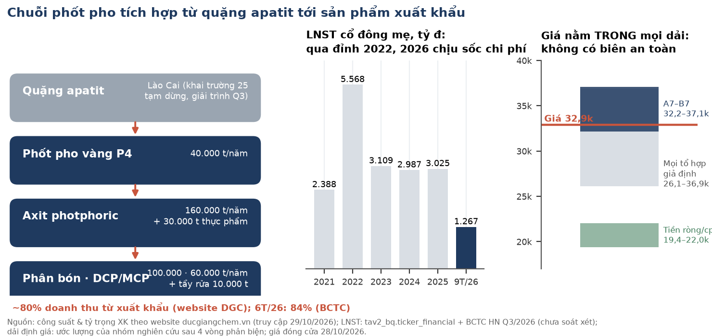
Xếp hạng của nhóm: AMBIGUOUS, nghiêng tích cực (constructive). Đây không phải QUALIFY và cũng không phải NON. Bảng cân đối mạnh (tiền ròng ≈ 22.040 đ/cp trước haircut, P/B ≈ 0,96). Nhưng giá 32.900 nằm trong mọi dải định giá đã xét, từ tổ hợp thấp nhất ≈ 26,1 nghìn tới cao nhất 36.880. Vì vậy giá hiện tại không có biên an toàn. Câu hỏi quyết định giá trị là dự phòng môi trường 200 tỷ chỉ trích một lần hay sẽ còn trích thêm. Câu hỏi này chưa phân định, và bằng chứng hai chiều đang cân nhau.
Thang của nhóm: QUALIFY (đủ điều kiện xem xét) · AMBIGUOUS (chưa đủ bằng chứng) · NON (không đủ điều kiện ở giá hiện tại). Đây là nhãn nghiên cứu, không phải khuyến nghị cá nhân hoá.
| Dữ liệu chính | Giá trị | Ghi chú |
|---|---|---|
| Đóng cửa 28/10/2026 | 32.900 đ | Mốc neo cho toàn bộ phân tích định giá |
| Giá 29/10/2026, khớp cuối phiên 14:45:02 ICT | 33.300 đ (+1,2%) | DNSE latest_trade, đọc lúc 19:12 ICT; kết luận không đổi ở cả hai mức |
| Dải mô hình tổng hợp A7 (khai trường đóng) – B7 (mở lại) | 32.182 – 37.060 | Ước lượng; giá nằm sát cận dưới A7 |
| Tổ hợp thấp nhất / cao nhất của các giả định đã xét | ≈ 26,1–26,6 nghìn / 36.880 | Thấp nhất: nền biên thấp + dự phòng 100 tỷ/quý lặp vĩnh viễn. Cao nhất: nền biên cao, không trích thêm |
| Tiền + tiền gửi · vay · tiền ròng (30/9/2026) | 9.761 · 1.391 · 8.370 tỷ | ≈ 22.040 đ/cp trước haircut; ≈ 19.400 sau khi trừ phần thuộc cổ đông thiểu số PAT (274 tỷ) và haircut 9% (ước lượng) |
| BVPS mẹ · P/B | 34.425 đ · 0,96× | VCSH mẹ 13.073,9 tỷ / 379,78 tr CP |
| P/E TTM (4 quý tới Q3/26) | 6,6× | LNST mẹ 4 quý 1.888,8 tỷ, đã gồm lãi tiền gửi |
| LNST mẹ 9T/2026 | 1.267,1 tỷ (−47% YoY) | BCTC hợp nhất Q3/2026, chưa soát xét |
| CFO/LNST | 9T/26 0,55× · 9T/25 0,49× · 4 quý gần nhất 0,82× | Theo quý: Q1 −1.093 · Q2 +852,6 · Q3 +996,1 tỷ |
| Vốn hoá (32.900) | 12.495 tỷ đ | 379.779.286 CP |
Ba luận điểm (MECE):
Điều gì làm chúng tôi đổi ý.
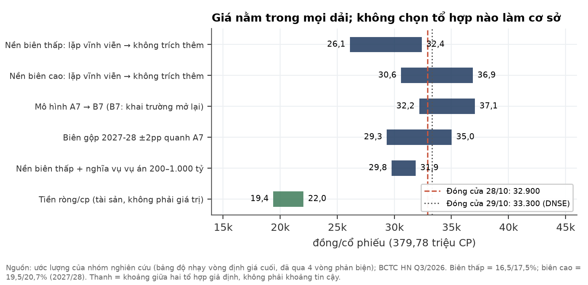
Tình huống (Situation). DGC là nhà sản xuất phốt pho vàng và hóa chất gốc phốt pho tích hợp từ mỏ quặng apatit ở Lào Cai. Khoảng 80% doanh thu đến từ xuất khẩu (website công ty; 6T/2026 là 84% theo BCTC). Doanh nghiệp có lượng tiền gửi lớn: tiền và tiền gửi có kỳ hạn 9.761 tỷ tại 30/9/2026. Giá cổ phiếu điều chỉnh giảm từ khoảng 75,0 nghìn (29/10/2025) xuống 32.900 (28/10/2026).
Biến chuyển (Complication). Có ba vấn đề chồng lên nhau trong năm 2026:
LNST mẹ 9T/2026 giảm 47%. Bản soát xét H1 có ý kiến ngoại trừ, và BCTC Q3 chưa được soát xét.
Câu hỏi (Question). Ở giá 32.900, thấp hơn giá trị sổ sách và cao hơn tiền ròng khoảng 11 nghìn đ/cp, nhà đầu tư đã được trả đủ cho rủi ro chi phí môi trường lặp lại và rủi ro pháp lý chưa định lượng được chưa?
Trả lời (Answer). Chưa rõ. Đó là lý do nhãn là AMBIGUOUS. Giá nằm trong mọi dải mà nhóm dựng được.
Giá hiện tại ngầm định lợi nhuận lõi thấp hơn khoảng 25–45% so với 9 tháng 2026 năm hoá, tức thị trường đã trừ một phần cho chi phí lặp hoặc biên giảm tiếp (ước lượng).
| Phép định giá ngược (ước lượng, giá 32.900) | Giá trị |
|---|---|
| Vốn hoá | 12.495 tỷ |
| Trừ tiền ròng sau phần cổ đông thiểu số PAT và haircut 9% (19.400 đ/cp) | −7.368 tỷ |
| Giá trị thị trường gán cho hoạt động lõi | ≈ 5.127 tỷ |
| LNTT lõi 9T/2026 = LN thuần HĐKD 1.568,0 − DT tài chính 576,1 + CP tài chính 61,9 | 1.053,8 tỷ (đã gồm 200 tỷ dự phòng) |
| Năm hoá, sau thuế 13% và phần cổ đông không kiểm soát (7,5%) | ≈ 1.131 tỷ |
| P/E lõi ngầm định | ≈ 4,5× |
| LNST lõi ngầm định ở P/E lõi 6–8× (khung dùng trong mô hình) | ≈ 640–855 tỷ/năm |
Đọc hai chiều.
Quan điểm khác biệt. Câu hỏi giá trị lớn nhất không phải con số 200 tỷ, vì nếu chỉ trích một lần thì chỉ ≈ 527–541 đ/cp. Câu hỏi lớn nhất là biên gộp 2027-28 sẽ ổn định ở đâu. Biên này có ba động lực cùng cỡ:
Dữ liệu công bố hiện không đủ để tách ba động lực này.
Chuỗi phốt pho toàn cầu đang chịu cú sốc cung từ eo Hormuz, chồng lên tình trạng thiếu lưu huỳnh mang tính cấu trúc. Theo bản đọc ngành, chi phí "giảm về hướng nhưng vẫn cao về mức". Phần này dựa trên một bản đọc ngành độc lập do một nhà phân tích vĩ mô thực hiện mù: người đọc không biết mã cổ phiếu, giá hay BCTC của doanh nghiệp, as-of 28/10/2026. Bản đọc tập trung vào phân bón lân DAP và chuỗi lưu huỳnh/NH3. Mảng lõi của DGC là phốt pho vàng, chỉ chia chung một phần chi phí đầu vào. Vì vậy phần này là bối cảnh, không phải dự báo biên của DGC.
| Chủ đề | Dữ kiện (nguồn, ngày) | Đọc của bản đọc ngành (nhận định) |
|---|---|---|
| Lưu huỳnh | Giá nội địa TQ 5.714 CNY/t (23/10), −38% từ đỉnh tháng 9.261 (T8), vẫn ×1,45 mức trước xung đột. Hợp đồng Trung Đông T10: Qatar 835 USD/t, chỉ −5–10% từ đỉnh (SMM 08/10/2026) | Đỉnh cấp tính đã qua. Chi phí thực của nhà nhập khẩu Việt Nam giảm ít hơn nhiều so với giá TQ gợi ý |
| DAP | 800,6 USD/t (WB, T9) = phân vị 96,7% của 10 năm; tỷ lệ DAP/urea ở phân vị 97,5% | Giá bền vừa phải tới Q1/2027, vùng 720–830; rủi ro giảm lớn hơn rủi ro tăng |
| Cung TQ | TQ cấm xuất khẩu MAP/DAP từ 19/03/2026; xuất khẩu lân 2026 gần bằng 0 (UkrAgroConsult 16/10/2026) | Đỡ giá cho tới khi TQ nối lại xuất khẩu (Argus dự kiến khoảng T5/2027) |
| NH3 / khí | Khí TTF +63% từ đầu T8; NH3 rời vùng Gulf gần như dừng (EnterpriseAM 06/10/2026). NH3 nội địa TQ chỉ +22% YoY | NH3 có thể lấy lại phần biên mà lưu huỳnh trả lại |
Phân loại cú sốc chi phí (đọc mù, xác suất chủ quan). Kéo dài về mức khoảng 70/30. Về hướng, chi phí giảm trong 1–2 quý tới. Một dự báo khoá trước sẽ được chấm vào 31/01/2027: giá lưu huỳnh nội địa TQ trung vị khoảng 4.900 CNY/t, P(<5.714) = 0,65.
Hàm ý cho DGC. Giải trình KQKD Q3 của công ty (28/10/2026) nêu đúng các yếu tố này: lưu huỳnh, điện, than cốc và amoniac tăng giá, cộng với việc phải dùng toàn bộ quặng nhập hoặc mua ngoài. Theo bản đọc ngành, giá vốn trong BCTC thường trễ 1–2 quý so với giá thị trường. Nhóm không dựng được cầu nối định lượng từ giá nguyên liệu tới biên của DGC. Lý do là doanh nghiệp không công bố tỷ trọng từng nguyên liệu trong giá vốn hay cơ cấu doanh thu theo sản phẩm.
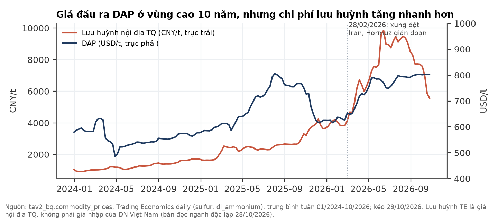
DGC là một trong số ít doanh nghiệp Việt Nam làm chủ trọn chuỗi từ quặng apatit tới phốt pho vàng và hóa chất tinh khiết. Lợi thế này gắn chặt với mỏ ở Lào Cai, và đó cũng là chỗ rủi ro hiện tại tập trung.
Lịch sử hình thành (website ducgiangchem.vn, truy cập 29/10/2026; BCTC hợp nhất Q3/2026 thuyết minh 1):
| Năm | Mốc |
|---|---|
| 1963 | Thành lập; tiền thân là Công ty Hóa chất Đức Giang, doanh nghiệp nhà nước thuộc Tổng cục Hóa chất |
| 2003–2004 | Cổ phần hoá; Giấy chứng nhận đăng ký doanh nghiệp lần đầu 05/03/2004 |
| 2020 | Niêm yết trên HOSE (DNSE secdef: ngày niêm yết 28/07/2020) |
| 2021 | Vào rổ FTSE Russell; Top 50 công ty đại chúng uy tín, hiệu quả (VietNamReport) |
| 2022 | Doanh thu gần 15.000 tỷ, vốn điều lệ 3.800 tỷ (theo website) |
| 2025–2026 | Khởi công Tổ hợp Hóa chất Nghi Sơn (02/2025). Vụ án khởi tố 03/2026. Điều chỉnh chủ trương đầu tư Nghi Sơn (15/10/2026) |
Sản phẩm và công suất (theo website; công ty không ghi ngày cập nhật số liệu):
| Sản phẩm | Công suất công bố | Vai trò |
|---|---|---|
| Phốt pho vàng (P4) | 40.000 t/năm | Sản phẩm lõi, chủ yếu xuất khẩu |
| Axit photphoric (chiết xuất) | 160.000 t/năm | Nguyên liệu cho phân bón, phụ gia |
| Axit photphoric thực phẩm | 30.000 t/năm | Hóa chất tinh khiết |
| Tổ hợp phân bón | 100.000 t/năm | Phân bón |
| Phụ gia thực phẩm/công nghiệp DCP & MCP | 60.000 t/năm | Thức ăn chăn nuôi, công nghiệp |
| Bột giặt, chất tẩy rửa | 10.000 t/năm | Tiêu dùng |
| Ắc quy Tia Sáng | 300.000 kWh/năm | Công ty con 51% |
Khách hàng và thị trường.
Cơ cấu tập đoàn (BCTC Q3/2026, thuyết minh 1). Gồm 3 chi nhánh (Hưng Yên, Bình Dương, Lào Cai) và 8 công ty con. Các đơn vị sản xuất chính:
Số lao động là 2.629 người tại 30/9/2026. Website còn liệt kê "Phốt Pho 6", nhưng đơn vị này không có trong danh sách công ty con của BCTC.
Định hướng chiến lược (công ty công bố). Tổ hợp Hóa chất Đức Giang Nghi Sơn giai đoạn 1 có vốn khoảng 2.400 tỷ. Theo nghị quyết HĐQT ngày 15/10/2026, dự án bổ sung H3PO4, PCl3 và PCl5, chạy thử Q4/2026 và vận hành thương mại toàn bộ từ Q1/2027. Cả tổ hợp gồm 3 giai đoạn, tổng vốn khoảng 12.000 tỷ theo báo chí. Đây là hướng mở rộng sang hóa chất gốc clo (xút, PVC), giúp đa dạng hoá khỏi phốt pho vàng. Giới hạn: hiệu quả của giai đoạn 1 chưa có số liệu vận hành.
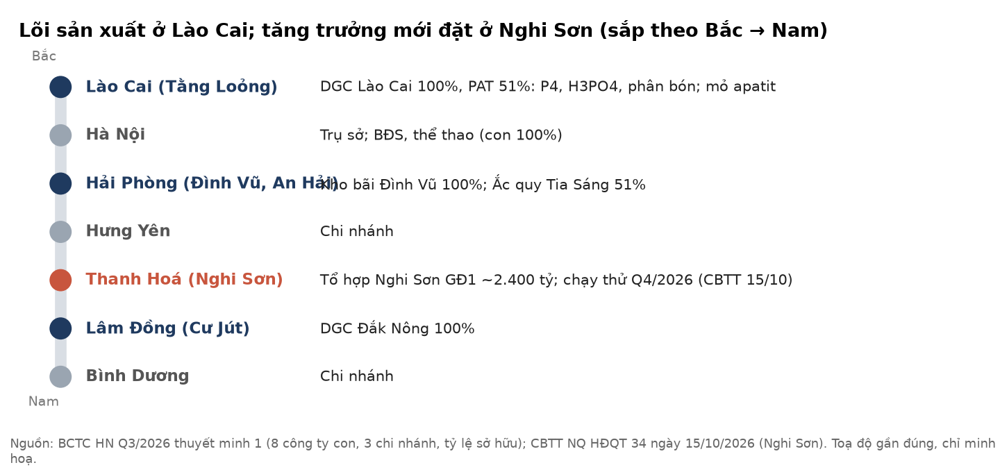
Biên gộp Q3/26 20,5% so với 31,1% Q3/25. Doanh thu tài chính, chủ yếu là lãi tiền gửi, chiếm 36,5% LNTT 9 tháng.
| Tỷ đồng [BCTC hợp nhất Q3/26, chưa soát xét] | Q3/26 | Q3/25 | 9T/26 | 9T/25 |
|---|---|---|---|---|
| Doanh thu thuần | 2.469,5 | 2.816,7 | 7.009,5 | 8.521,4 |
| Lợi nhuận gộp · biên | 506,4 · 20,5% | 875,5 · 31,1% | 1.451,2 · 20,7% | 2.836,5 · 33,3% |
| Doanh thu tài chính | 209,6 | 192,1 | 576,1 | 542,2 |
| Chi phí bán hàng + quản lý | 125,1 | 144,4 | 397,4 | 425,3 |
| LNTT | 580,6 | 901,3 | 1.577,3 | 2.865,5 |
| Thuế TNDN / LNTT | 12,8% | 13,0% | ||
| LNST cổ đông mẹ | 478,2 (−36%) | 751,6 | 1.267,1 (−47%) | 2.403,2 |
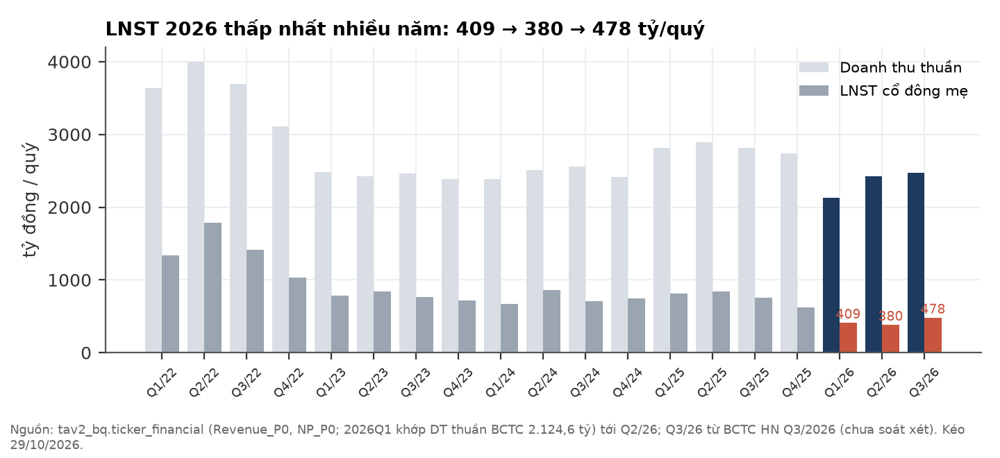
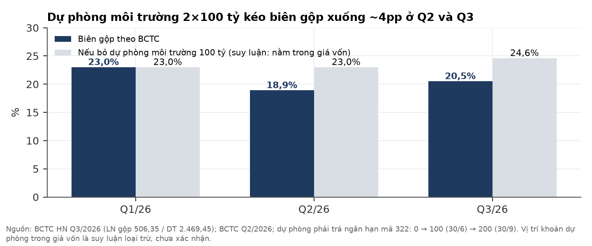
Từng điểm có quy mô nhỏ so với vốn hoá, nhưng gộp lại chúng làm giảm độ tin cậy của bộ số. Tất cả nằm dưới hai ý kiến ngoại trừ của kiểm toán.
| # | Sự kiện (nguồn) | Quy mô | Vì sao quan trọng |
|---|---|---|---|
| 1 | Dự phòng chi phí khôi phục môi trường 100 + 100 tỷ, không thuyết minh lịch chi (BCTC soát xét H1 note 19; BCTC Q3) | 200 tỷ ≈ 527–541 đ/cp nếu chỉ một lần | Bản chất một lần hay lặp chưa phân định (mục 7) |
| 2 | Khoản mục liên quan dự án Đắk Nông 60,09 tỷ về 0 qua dòng "giảm khác" 63,38 tỷ; không thuyết minh là bán hay xoá sổ (BCTC Q3) | 63,4 tỷ | Chưa giải trình |
| 3 | LCTT 9T: các dòng đầu tư cộng ra 2.850,50, nhưng dòng tổng in 2.802,27, lệch 48,23 tỷ ngay trong bản gốc (đã phóng ảnh kiểm lại) | 48,2 tỷ | Lỗi in hoặc thiếu dòng, chưa rõ |
| 4 | Thu thanh lý TSCĐ 9T 332,3 tỷ, không nêu bên mua (theo bản trích; cần đối chiếu ảnh LCTT) | 332,3 tỷ | Chưa biết có phải bên liên quan |
| 5 | BCTC Q3 chưa soát xét. Soát xét H1/2026 (UHY, 26/08/2026) ngoại trừ vì vụ việc đang điều tra; không đủ bằng chứng để xác định có cần điều chỉnh khoản mục nào | — | Mọi số liệu 2026 nằm dưới ý kiến này |
| 6 | Kiểm toán 2025 ngoại trừ: 950,9 tỷ tồn kho chưa đủ bằng chứng (VietnamFinance 06/10/2026, một nguồn) | 950,9 tỷ | Tồn kho 30/9/2026 là 2.085,9 tỷ, dự phòng giảm giá chỉ 0,29 tỷ |
Gộp ba khoản #1 (phần trích Q3), #2 và #3: 100 + 63,38 + 48,23 = 211,6 tỷ ≈ 557 đ/cp. Đây là ước lượng trong trường hợp mất trắng, và nó không bao gồm khoản #4.
CFO 9T/26 chỉ bằng 0,55× LNST hợp nhất, nhưng 4 quý gần nhất là 0,82×. Hai quý gần nhất đều cao hơn LNST.
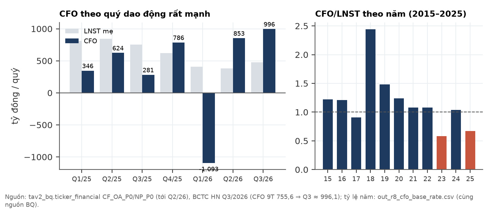
Tiền ròng 8.370 tỷ (≈ 22.040 đ/cp) tại 30/9/2026. Con số này giảm từ khoảng 11.900 tỷ đầu năm, chủ yếu vì cổ tức và capex.
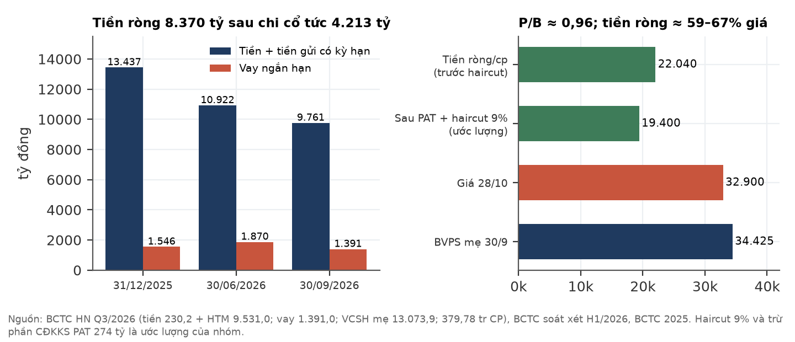
Giá điều chỉnh (đã trừ cổ tức tiền mặt) giảm khoảng 56% trong 12 tháng: từ 74.970 (29/10/2025) còn 32.900 (28/10/2026). Đáy là 29.840 ngày 27/07/2026. Trong cùng giai đoạn có nhiều sự kiện pháp lý và kế toán, đánh dấu trên biểu đồ. Các đường dọc chỉ đánh dấu thời điểm. Nhóm không chứng minh được sự kiện nào gây ra biến động nào. Ngày 05–06/10/2026, HOSE đưa DGC vào danh sách không được giao dịch ký quỹ quý IV/2026 vì mã đang bị hạn chế giao dịch (cafef, VietnamFinance).
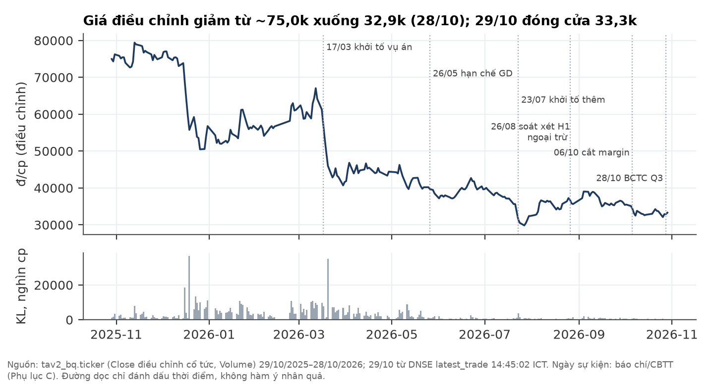
Hai giả định chi phối toàn bộ dải: (i) biên gộp 2027-28, mỗi 1pp ≈ 1.420 đ/cp; (ii) dự phòng môi trường còn trích bao nhiêu quý. Cả hai đều là giả định, không có số neo đáng tin.
Phương pháp.
| Cách đọc dự phòng (giá trị A7, đ/cp) | Nền biên thấp: trước thuế / sau lá chắn 20% | Nền biên cao: trước thuế / sau lá chắn 20% |
|---|---|---|
| Không trích thêm (kể cả Q4) | 32.399 | 36.880 |
| 100 tỷ × 1 quý | 32.146 / 32.197 | 36.627 / 36.678 |
| 100 tỷ × 4 quý | 31.439 / 31.631 | 35.920 / 36.112 |
| 200 tỷ × 4 quý | 30.478 / 30.862 | 34.959 / 35.343 |
| 100 tỷ × 8 quý | 30.603 / 30.962 | 35.084 / 35.443 |
| 200 tỷ × 8 quý | 28.807 / 29.525 | 33.288 / 34.006 |
| 100 tỷ/quý lặp vĩnh viễn | ≈ 26.117 – 26.558 (ba cách đo) | 30.598 (qua mô hình) |
| Cộng nghĩa vụ vụ án pháp nhân 200 / 500 / 1.000 tỷ (trừ thẳng 527 / 1.317 / 2.633 đ/cp) | 31.872 / 31.082 / 29.766 | 36.353 / 35.563 / 34.247 |
Cách đọc bảng.
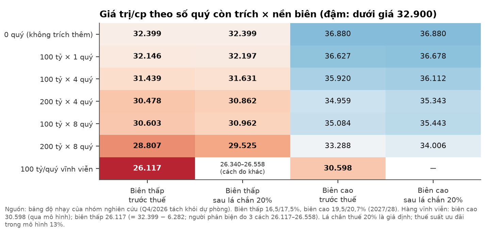
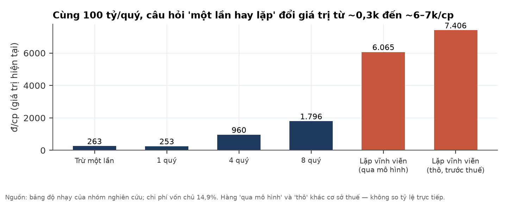
Bằng chứng về "một lần hay lặp": hai chiều cân nhau.
| Chiều | Bằng chứng (nguồn) |
|---|---|
| Nghiêng hữu hạn | Nhãn khoản mục là "Provision for environmental restoration costs" (khôi phục; note 19 BCTC soát xét H1). Đến 30/9 chưa thấy sử dụng (H1 cột giảm "-"). Dòng LCTT 9T "dự phòng +199,95" là điều chỉnh phi tiền, chỉ ghi như quan sát |
| Nghiêng lặp/tăng | Chú thích note 19: chi phí "arising from the Group's production and business activities" (phát sinh từ hoạt động sản xuất kinh doanh). Q3 trích thêm 100 tỷ, không thuyết minh |
| Không phân định | Chuẩn mực VAS 18 cho phép ghi nhận cả nghĩa vụ phát sinh định kỳ, nên không tự phân biệt được hai trường hợp. Báo chí diễn ý ĐHĐCĐ 13/08: doanh nghiệp "đã chủ động trích lập dự phòng 100 tỷ đồng để triển khai các biện pháp xử lý" (doanhnhan.baophapluat.vn 15/08, không phải lời nguyên văn) |
| Không nối được với vụ án | Thuyết minh 36 H1: HĐQT chưa đủ cơ sở ước tính đáng tin cậy tác động tài chính của vụ án. Vì vậy không thể coi khoản 200 tỷ là nghĩa vụ của vụ án. Thời điểm trùng nhau chỉ là bối cảnh, chưa chứng minh. Tác động của vụ án, nếu có, là phần cộng thêm |
Vùng giá cần chạy lại kiểm định. Nhóm không gán QUALIFY cho bất kỳ vùng giá nào. Muốn nâng nhãn, cần một trong các mốc ở mục 10 thay đổi, rồi chạy lại toàn bộ bài kiểm định.
Hai rủi ro có tác động lớn nhất là dự phòng lặp và pháp lý đối với pháp nhân. Rủi ro dễ xảy ra nhất là kiểm toán tiếp tục ngoại trừ. Xác suất và tác động là nhận định chủ quan của nhóm.
| # | Rủi ro | Xác suất | Tác động | Dấu hiệu sớm | Kiểm khi nào |
|---|---|---|---|---|---|
| R1 | Dự phòng môi trường hoá ra là chi phí xử lý định kỳ | TB | Rất lớn (tới ≈ 6.000 đ/cp nếu vĩnh viễn) | Q4 trích thêm; thuyết minh BCTC năm cho thấy khoản này gắn với hoạt động sản xuất kinh doanh định kỳ | BCTC Q4/2026, kiểm toán 2026 |
| R2 | Pháp nhân hoặc công ty con bị truy cứu; đình chỉ hoạt động; buộc khắc phục | Thấp | Rất lớn | Quyết định khởi tố pháp nhân, kê biên, đình chỉ | Liên tục |
| R3 | Biên gộp 2027-28 dưới 16,5% (S/NH3 cao kéo dài, giá P4 giảm) | TB | Lớn (≈ 1.420 đ/cp mỗi 1pp) | Biên quý bỏ dự phòng < 20% | Hằng quý |
| R4 | Khai trường 25/19B không mở lại | TB | TB (≈ 4.878 đ/cp giữa B7 và A7) | Không có văn bản mốc mở lại | Hằng quý |
| R5 | Kiểm toán 2026 tiếp tục ngoại trừ, từ chối hoặc nộp chậm | Cao | Nhỏ–TB | Tiến độ điều tra | 31/03/2027 |
| R6 | Nghi Sơn chạy thử chậm hoặc hiệu suất thấp năm đầu | TB | Nhỏ | Không có doanh thu mới từ Q1/2027 | BCTC Q4/26, Q1/27 |
| R7 | Giá DAP/P4 điều chỉnh khi TQ nối lại xuất khẩu | TB | TB | TQ công bố cửa sổ xuất khẩu lân | ~T5/2027 |
Điều có thể làm chúng tôi sai theo chiều tích cực:
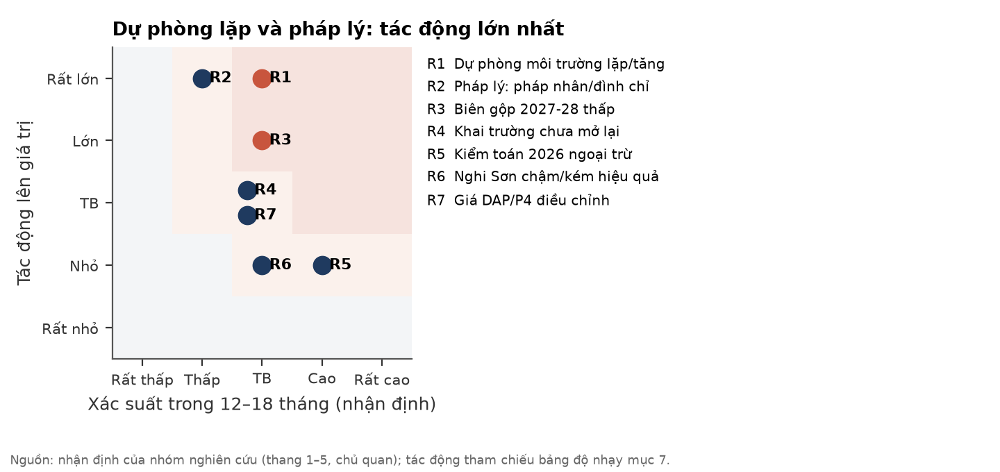
Có vụ án hình sự đang điều tra liên quan trực tiếp tới tài sản lõi (mỏ) và tới tính toàn vẹn của BCTC (tội danh kế toán). Mức thiệt hại cuối cùng chưa được công bố.
Phạm vi tra cứu.
Diễn biến vụ án:
Khung pháp lý (tham khảo):
Giao dịch và quản trị:
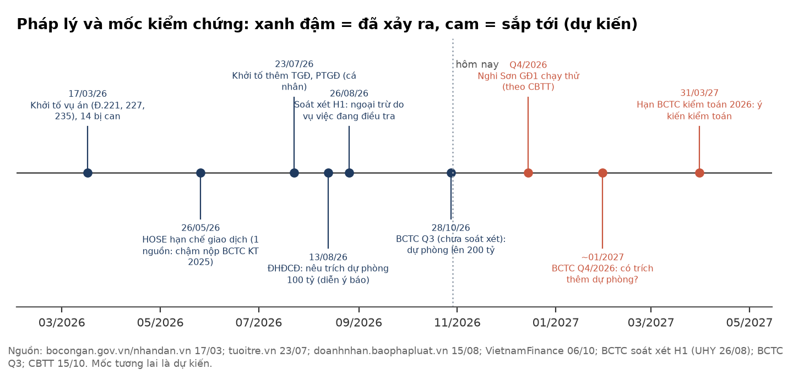
Mốc kiểm chứng quan trọng nhất là DGC trả lời về bản chất khoản dự phòng 200 tỷ, và BCTC Q4/2026 có trích thêm hay không.
| Thời điểm | Sự kiện | Kiểm gì | Hệ quả với nhãn |
|---|---|---|---|
| Bất kỳ lúc nào | DGC công bố bản chất, tổng mức và lịch chi của dự phòng môi trường; dự kiến trích thêm | Một lần hay định kỳ; có gắn với vụ án không | Một lần và đủ ⇒ chạy lại kiểm định, có thể lên QUALIFY. Định kỳ ⇒ NON |
| Q4/2026 | Nghi Sơn GĐ1 chạy thử (theo CBTT 15/10/2026) | Có văn bản xác nhận vận hành | Hỗ trợ chiều tích cực; quy mô nhỏ so với lõi |
| Chưa có ngày (không có nguồn) | HOSE gỡ hạn chế giao dịch | Thông báo gốc HOSE | Cải thiện thanh khoản, không đổi giá trị |
| Bất kỳ lúc nào | Khai trường 25/19B mở lại | Văn bản cho phép | ≈ +4.878 đ/cp (B7 − A7, theo mô hình) |
| ~01/2027 | BCTC Q4/2026; BCTC soát xét hoặc kiểm toán | Dự phòng có tăng thêm không; biên gộp bỏ dự phòng; CFO | Tăng thêm mà không giải thích ⇒ nghiêng NON |
| Liên tục | Pháp lý: khởi tố pháp nhân, đình chỉ, kê biên, kết luận điều tra | Thông báo cơ quan tố tụng, CBTT | Xảy ra ⇒ NON |
| 31/03/2027 (hạn) | BCTC kiểm toán 2026 | Ý kiến kiểm toán; thuyết minh dự phòng | Gỡ ngoại trừ ⇒ chiều tích cực. Từ chối ý kiến hoặc nộp chậm ⇒ NON |
| 31/01/2027 | Chấm dự báo khoá trước của bản đọc ngành (giá lưu huỳnh, DAP) | Hướng chi phí đầu vào | Hỗ trợ hoặc phản bác giả định biên |
Nguồn: BCTC hợp nhất Q3/2026 (ký 28/10/2026, chưa soát xét, bản scan 45 trang, chép tay từ ảnh); BCTC soát xét H1/2026 (UHY). Đơn vị tỷ đồng.
| Bảng cân đối | 30/09/2026 | 30/06/2026 | 31/12/2025 |
|---|---|---|---|
| Tiền và tương đương tiền | 230,2 | — | 1.040,5 |
| Đầu tư nắm giữ đến đáo hạn (tiền gửi) | 9.531,0 | — | 12.396,2 |
| Tiền + tiền gửi | 9.761,2 | 10.921,5 | 13.436,7 |
| Phải thu ngắn hạn | 811,8 | 1.850,6 | 1.220,4 |
| Hàng tồn kho (dự phòng giảm giá 0,29) | 2.085,9 | 2.460,2 | 1.681,9 |
| XDCB dở dang | 1.452,8 | 1.320,9 | 804,8 |
| Tổng tài sản | 16.513,9 | 19.271,2 | — |
| Vay ngắn hạn | 1.391,0 | 1.869,7 | 1.546,2 |
| Dự phòng phải trả ngắn hạn | 200,0 | 100,0 | 0 |
| Quỹ khen thưởng phúc lợi | 592,8 | 405,7 | — |
| VCSH (gồm CĐKKS 400,7) | 13.474,6 | — | — |
| VCSH cổ đông mẹ | 13.073,9 | — | — |
| Lưu chuyển tiền tệ 9T/2026 (gián tiếp) | Tỷ đồng |
|---|---|
| LNTT | 1.577,3 |
| Khấu hao · dự phòng · lãi đầu tư · chi phí lãi vay | +209,4 · +199,95 · −527,1 · +37,7 |
| Tồn kho (tăng) · thuế TNDN đã nộp | −421,7 · −399,5 |
| CFO 9T/2026 (9T/2025: 1.250,2) | 755,6 |
| Chi mua sắm TSCĐ · thu thanh lý (theo bản trích; cần đối chiếu ảnh) | −511,6 · +332,3 |
| CFI 9T (dòng tổng in; các dòng con cộng ra 2.850,50) | +2.802,3 |
| Cổ tức đã trả · CFF 9T | −4.213,0 · −4.368,2 |
| Chỉ tiêu | tav2_bq | BCTC | Kết luận |
|---|---|---|---|
| Revenue_P0 Q1/26 | 2.125,5 | DT thuần Q1 = H1 4.540,0 − Q2 2.415,4 = 2.124,6 | Khớp (doanh thu thuần) |
| NP_P0 Q1 + Q2/26 | 408,8 + 380,1 = 788,9 | LNST mẹ H1 soát xét 788,94 | Khớp |
| GPM_P0 Q1 · Q2/26 | 28,7% · 24,8% | Biên gộp 23,0% · 18,9% | Lệch — định nghĩa khác; không dùng làm biên |
| CF_OA_P0 Q1 + Q2/26 | −1.093,0 + 852,6 | CFO 9T 755,6 ⇒ Q3 ≈ 996,1 | Nhất quán |
| Cash_P0 | Chỉ tiền và tương đương | Không gồm 9.531 tỷ tiền gửi kỳ hạn | Không dùng Cash_P0 cho tiền ròng |
| StDebt_P0 Q2/26 | 1.869,7 | Vay ngắn hạn 30/6: 1.869,7 | Khớp |
| OShares | 379,78 tr | 379.779.286 CP | Khớp |
| Sàn niêm yết | — | DNSE secdef: marketId = STO | HOSE |
| Trạng thái mã trên DNSE secdef (29/10 08:00) | — | symbolAdminStatusCode = "RES" | Nhóm chưa đối chiếu ý nghĩa mã với tài liệu DNSE; không dùng để xác nhận trạng thái HOSE |
| Giá đóng cửa 28/10 | 32.900 | DNSE basicPrice 29/10 = 32.900 | Khớp |
| Nguồn | Ngày | Ghi chú |
|---|---|---|
| BCTC hợp nhất Q3/2026 (scan, chưa soát xét) | 28/10/2026 | ducgiangchem.vn; ảnh trang lưu trong hồ sơ |
| Văn bản giải trình KQKD Q3, 12/2026/CV-KT-DGC | 28/10/2026 | ducgiangchem.vn |
| BCTC hợp nhất soát xét H1/2026 (UHY, 995/2026/UHY-BCSX), note 19, 35, 36, 38 | 26/08/2026 | ducgiangchem.vn |
| BCTC Q2/2026 (cơ cấu doanh thu nội địa/xuất khẩu 6T) | 2026 | ducgiangchem.vn |
| Website công ty — giới thiệu, công suất | Truy cập 29/10/2026 | ducgiangchem.vn/gioi-thieu |
| CBTT nghị quyết HĐQT 34 — Dự án Nghi Sơn | 15/10/2026 | Qua báo chí |
| Bộ Công an; Nhân Dân; BNEWS — khởi tố vụ án | 17/03/2026 | bocongan.gov.vn, nhandan.vn |
| Tuổi Trẻ — khởi tố bổ sung | 23/07/2026 | tuoitre.vn |
| Báo Pháp luật — ĐHĐCĐ, "chưa khởi tố pháp nhân" | 15/08/2026 | doanhnhan.baophapluat.vn |
| Kenh14 (dẫn VKSND); VnExpress; Viettimes | 23/06; 13/08/2026 | Tiền khắc phục; phát biểu HĐQT |
| VietnamFinance; cafef — hạn chế giao dịch, cắt margin, ngoại trừ 2025 | 05–06/10/2026 | Lý do hạn chế: một nguồn |
| Bản đọc ngành phân bón lân/lưu huỳnh/NH3 (đọc mù) | 28/10/2026 (+ bổ sung 29/10) | Nguồn gốc: SMM, Argus, UkrAgroConsult, WB, OilChem, EnterpriseAM… |
| tav2_bq: ticker, ticker_financial, commodity_prices | Kéo 29/10/2026 | Cơ sở dữ liệu của nhóm |
| DNSE OpenAPI latest_trade, secdef (DGC) | 29/10/2026, đọc 19:12 ICT | Khớp cuối phiên 14:45:02 |
Phương pháp. Giá trị được dựng từ dưới lên theo thứ tự: chất lượng lợi nhuận → dòng tiền → bảng cân đối → biên 2027-28 → SOTP, DCF và bội số. Sau đó đối chiếu từ trên xuống với bản đọc ngành. Số do nhóm tự tính được ghi "(ước lượng)". Biểu đồ và CSV được tái lập bằng `build_report.py`.
Giá dùng trong báo cáo. Định giá neo vào đóng cửa 28/10/2026 (32.900 đ). Giá đóng cửa 29/10 (33.300 đ, +1,2%) từ DNSE không làm đổi kết luận: giá vẫn nằm trong mọi dải và vẫn sát cận dưới A7.
Giới hạn đã biết:
Báo cáo đi qua ba lớp tách biệt:
Minh bạch — những gì người phản biện đã sửa qua bốn vòng:
Giới hạn của quy trình. Các sửa theo vòng phản biện cuối (nêu ở mục 4-6 trên) được áp vào báo cáo này sau vòng đó và chưa được người phản biện rà lại lần nữa; số học đã được nhóm tái lập độc lập. Phần pháp lý do tra cứu tham khảo, nhiều điểm chưa xác minh nguyên văn.
Lịch sử nhãn. Các vòng trước đã cân nhắc giữa AMBIGUOUS và NON. Nhãn hiện tại (AMBIGUOUS, nghiêng tích cực) giữ cả hai chiều bằng chứng. Nhóm nêu điều này để người đọc biết kết luận đã từng dao động trên cùng một bộ dữ liệu.
Tài liệu này mang tính thông tin và nghiên cứu. Nó không phải lời khuyên đầu tư cá nhân hoá và không phải đề nghị giao dịch chứng khoán. Nhãn QUALIFY/AMBIGUOUS/NON là đánh giá nghiên cứu theo khung của nhóm, không tính tới mục tiêu, khẩu vị rủi ro hay tình hình tài chính của từng nhà đầu tư. Số liệu quá khứ không bảo đảm kết quả tương lai. Các ước lượng, kịch bản và xác suất là chủ quan và có thể sai. Thông tin pháp lý chỉ để tham khảo, không phải ý kiến tư vấn pháp lý. BCTC Q3/2026 chưa được soát xét. Người đọc tự chịu trách nhiệm về quyết định của mình và nên tham khảo chuyên gia được cấp phép trước khi đầu tư.